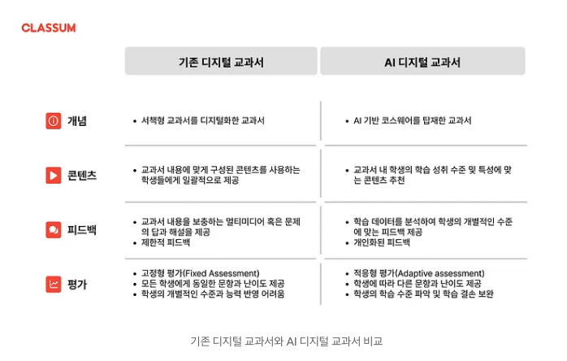
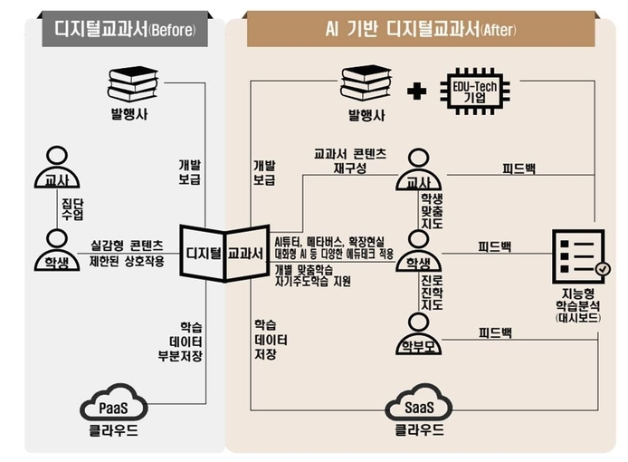
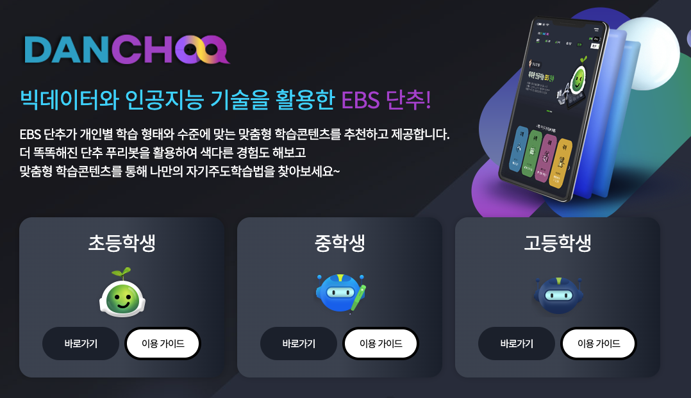
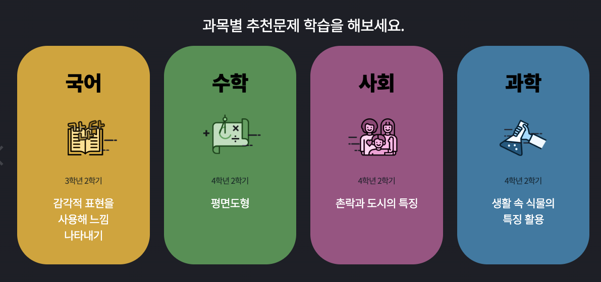
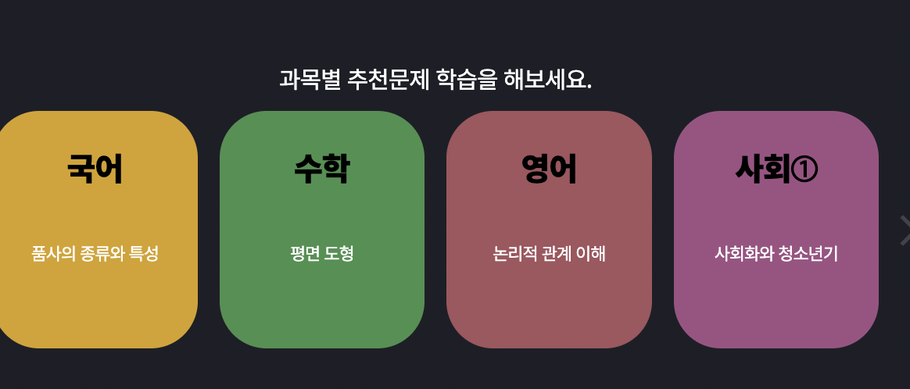
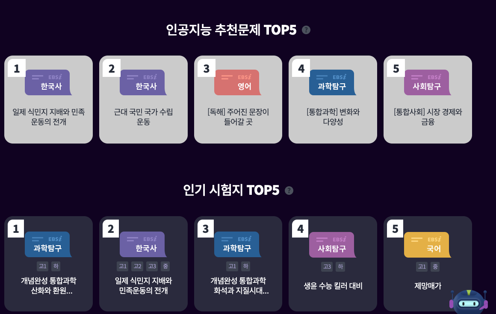
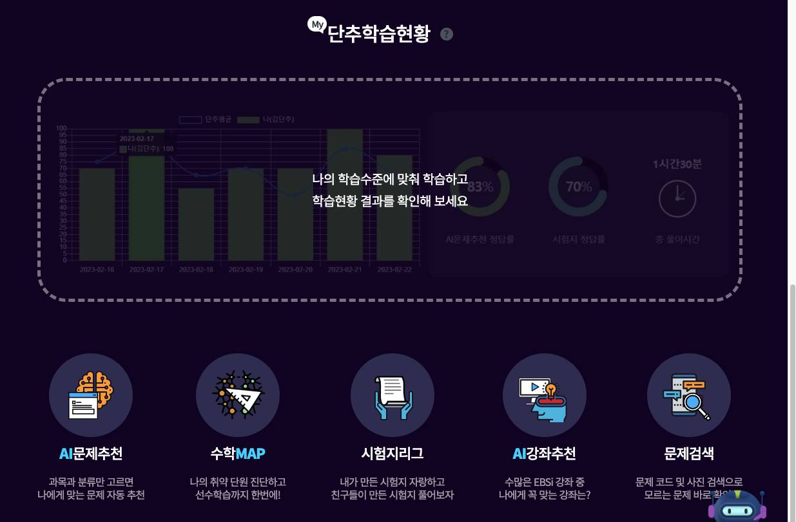
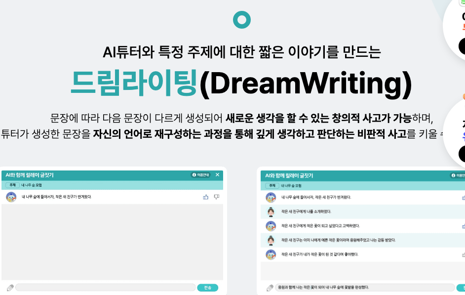

AI 디지털 교과서가 학습에 도움이 될까? (feat. 교육청의 AI 교과서란 무엇인가?)#
개요#
ChatGPT 열풍이 불면서, 교육에 있어서도 AI를 활용하여 교사와 학생에게 맞춤형 교육을 제공해줄 수 있습니다.
2025년까지 주요교과에 대해 공급할 예정이며, 2028년까지 후속으로 제공할 예정입니다.
교육청의 AI 교과서 사업이란?#
[이주호 / 교육부 장관]
“학생은 맞춤 교육으로 학습에서 성공을 경험하고 교사는 데이터 기반으로 수업을 디자인하고 개별 학생의 인간적 성장을 이끄는 역할에 더 집중할 수 있습니다.”

디지털교과서와 AI 교과서의 차이점
현재 보급된 디지털 교과서는 전통적인 서책형 교과서를 디지털 형태로 제공하는 방식이었습니다.
반면에 AI 디지털 교과서는 인공지능 기술을 활용하여 학습자 개개인의 특성과 학습 상황을 파악하고, 맞춤형 교육을 제공하는 것이 가장 큰 특징입니다.

AI 교과서와 기존 디지털 교과서의 차이점
AI 교과서는 기존 디지털 교과서에 비해 실감형 콘텐츠, 개별 맞춤학습, 자기주도학습, 진로·진학 지도, 지능형 학습분석 등의 측면에서 다양한 장점을 가지고 있습니다. 이러한 장점으로 인해 AI 교과서는 교육의 패러다임을 변화시킬 수 있는 잠재력을 가지고 있습니다.
① 기존 디지털 교과서
텍스트와 이미지 중심의 콘텐츠를 제공합니다. 기존 디지털 교과서는 종이 교과서를 디지털화한 것으로, 텍스트와 이미지 중심의 콘텐츠를 제공합니다.
제한된 상호작용을 지원합니다. 기존 디지털 교과서는 학생과 교과서 간의 상호작용이 제한적입니다.
개별 맞춤학습을 지원하지 않습니다. 기존 디지털 교과서는 모든 학생에게 동일한 학습 콘텐츠와 피드백을 제공합니다.
자기주도학습을 지원하지 않습니다. 기존 디지털 교과서는 교사의 지시에 따라 학습해야 하는 경우가 많습니다.
진로·진학 지도를 지원하지 않습니다. 기존 디지털 교과서는 진로·진학에 필요한 정보를 제공하지 않습니다.
② AI 디지털 교과서
실감형 콘텐츠를 제공합니다. AI 교과서는 증강 현실(AR), 가상 현실(VR) 등 다양한 실감형 콘텐츠를 활용하여 학습자의 몰입도를 높이고 학습 효과를 높일 수 있습니다.
개별 맞춤학습을 지원합니다. AI 교과서는 학생의 학습 성취도, 학습 스타일, 학습 흥미 등을 분석하여 맞춤형 학습 콘텐츠와 피드백을 제공합니다.
자기주도학습을 지원합니다. AI 교과서는 학생이 스스로 학습할 수 있도록 다양한 학습 도구와 학습 리소스를 제공합니다.
진로·진학 지도를 지원합니다. AI 교과서는 학생의 진로·진학에 필요한 정보를 제공하고, 학생의 진로·진학 계획을 수립하는 데 도움을 줍니다.
지능형 학습분석을 제공합니다. AI 교과서는 학생의 학습 데이터를 분석하여 학습자의 학습 패턴을 파악하고, 학습자의 학습 효율성을 높이기 위한 방법을 제시합니다.
그렇다면 AI 교과서는 어떤 형태로 제공이 될까?
이에 대해서 AI 코스웨어라는 신조어를 통해 제공되곤합니다.
AI코스웨어(courseware, course + software)
AI 코스웨어는 ‘문제 풀이 기반’과 ‘질문 기반’의 두 가지 유형으로 분류됩니다.
① 문제 풀이 기반 AI 코스웨어: 이는 학생들의 학습 성취도를 평가하고 각 학생의 수준에 맞는 맞춤형 문제와 해답을 제공하는 AI 기반 방법입니다.
예를 들어, 수학의 각 단원별 개념 학습이나 정보 수업의 프로그래밍 과제 등의 실습에 활용할 수 있습니다.
대표적인 서비스로서 스피킹클래스, AI펭톡, 듀오링고, 매쓰플랫, 클래스팅, 아이스크림에듀, Khan Academy 등이 있습니다.
② 질문 기반 AI 코스웨어: 이는 AI가 학생의 질문을 바탕으로 각 학생의 상황에 맞는 맞춤형 콘텐츠와 해답을 제공하는 방법입니다.
질문 기반 AI 코스웨어의 대표적인 예로는 클라썸이 있습니다.
질문 기반 AI 교육 콘텐츠는 학생 참여를 높이고 자기 주도 학습을 지원하는 데 효과적입니다.
예를 들어, 수학 수업 후에 생긴 질문을 학생이 남기면 AI는 조교 선생님처럼 즉시 답변을 제공합니다.
AI를 통해 학생들은 학습의 병목 현상 없이 즉시 다음 단계로 나아갈 수 있으며, AI가 추천하는 맞춤형 콘텐츠를 통해 심층적으로 학습할 수 있습니다.
어떤 유형의 AI 교육 콘텐츠를 사용할지는 교육 목표와 맥락에 따라 달라집니다. 향후 개인의 상황에 맞는 AI 교육 콘텐츠를 선택하고 적절히 활용하는 것이 더욱 중요해질 것입니다.
AI 교과서 도입과정#
교육부는 2025년 수학과 영어, 정보, 특수교육 국어 과목에 먼저 도입하고 2028년까지 예체능과 도덕을 제외한 전과목으로 확대할 예정입니다.
개발 또한 교과서 개발 경험이 있는 발행사와 신기술을 보유한 에듀테크 기업이 협업해 진행합니다.
개발된 AI 디지털교과서가 검정 심사에 합격하더라도 6개월 동안 신뢰성과 적합성을 검토해 현장에 보급할 계획입니다.
아울러 교육부는 AI 디지털교과서 활용을 위해서는 교사의 역량이 중요하다며 수업 역량 개발 지원에 나선다고 밝혔습니다.
2025년 먼저 도입되는 수학, 영어, 정보 등 담당 교사부터 방학 기간을 활용한 연수가 이뤄집니다.
AI를 활용한 에듀테크 현황#
교과과정 : EBS 단추(DANCHOO)#
EBS 단추는 EBS가 개발한 AI 기반 학습 솔루션으로, 학생의 학습 성취도를 향상시키고 자기주도 학습을 지원하는 것을 목표로 합니다.
개별 맞춤학습
EBS 단추는 학생의 학습 성취도, 학습 스타일, 학습 흥미 등을 분석하여 맞춤형 학습 콘텐츠와 피드백을 제공합니다. 이를 통해 학생이 자신의 수준에 맞는 학습을 할 수 있도록 지원합니다.

위와 같이 초등학생부터 고등학생까지 수준별 문제를 제공하고 있습니다.
자기주도 학습
EBS 단추는 학생이 스스로 학습할 수 있도록 다양한 학습 도구와 학습 리소스를 제공합니다. 이를 통해 학생이 자신의 학습 목표를 설정하고, 학습 계획을 수립하고, 학습 결과를 평가할 수 있도록 지원합니다.
 
위와 같이 과목별로 추천문제를 선택하여 학습하며 자신만의 로드맵을 만들어갈 수 있습니다.
지능형 학습분석
EBS 단추는 학생의 학습 데이터를 분석하여 학습자의 학습 패턴을 파악하고, 학습자의 학습 효율성을 높이기 위한 방법을 제시합니다. 이를 통해 학생이 효과적으로 학습할 수 있도록 지원합니다.
 
위처럼 단추가 나의 학습현황에 맞게 문제를 추천해주고, 학습현황을 시각화해주기도 합니다.
EBS 단추는 이러한 특징을 통해 학생의 학습 성취도를 향상시키고, 자기주도 학습을 지원하며, 학생의 진로·진학을 돕는 데 기여할 것으로 기대됩니다.
비교과 과정 : 드림라이팅(DreamWriting)#

창의적 사고 강화: AI 디지털 교과서에서 제공하는 개인화된 학습 콘텐츠와 드림라이팅 기능을 통해 학생들은 특정 주제에 대해 AI와 상호작용하면서 다양한 관점에서 생각하고, 창의적인 문장을 생성할 수 있습니다.
비판적 사고 개발: 학생들은 AI가 제공한 문장을 자신의 언어로 재구성하면서 깊이 있는 사고를 하고, 비판적으로 판단하는 능력을 향상시킬 수 있습니다. 이는 AI 디지털 교과서에서의 맞춤형 학습 경험과 연계되어 학습 효과를 극대화합니다.
학습 성과의 기록 및 관리: AI와 함께 작성한 글을 이야기 책으로 저장하는 기능은 학생들이 자신의 학습 과정과 성과를 기록하고 관리할 수 있게 해줍니다. 이는 AI 디지털 교과서의 데이터 분석 및 관리 기능과 통합되어 학습자의 성장을 체계적으로 지원합니다.
결론#
AI 디지털 교과서, 단원 추천 기능
단원별 학습 내용을 분석하여 학생의 학습 수준에 맞는 학습 콘텐츠를 추천
추천 콘텐츠는 학생의 학습 성취도를 향상시키는 데 효과적
단원이 정해져있어야 추천이 가능하며, 장기적인 학습 계획을 세우는 데 도움
풀이과정인식 AI, 교과서에도 적용될 가능성이 높다.
학생의 풀이 과정 분석하여 개별 이해도 파악, 맞춤형 피드백 제공
학생의 오류 파악, 학습 성취도 평가에 도움
고성능 장비 보급, 데이터 확보 선결 과제 (ai hub 데이터 참고)
AI 디지털 교과서 , 비교과 및 글쓰기 평가에 유용
비교과 활동이나 글쓰기의 주제, 내용, 구성 등을 분석하여 학생의 역량을 평가
객관적이고 정확한 평가가 가능하며, 학생의 역량을 보다 면밀하게 파악할 수 있음
추후 데이터가 확보된다면, 교과 평가에도 적용 가능할 것으로 전망
위 3가지 특징을 통해 살펴볼 수 있듯이, 앞으로 데이터가 확보될수록 AI 디지털 교과서는 단원별 문제 추천뿐 아니라, 교과 과정에도 적용 가능해질 것입니다. 나아가 풀이과정 인식이 가능해지면 수행평가까지도 영향력을 넓힐 수 있을 것으로 전망되고 있습니다.
점점 발전하는 AI 기술력을 힘입어 AI 디지털 교과서는 학생 개개인의 학업에 있어서 학원이나 과외에 영향력을 줄어들게하며, 모두에게 상향평준화된 교육의 기회를 제공할 것입니다. 즉, “AI 디지털 교과서는 학습에 도움이 된다”의 방향으로 나아갈 것입니다.
Reference#
AI 교과서 도입 : https://www.ktv.go.kr/content/view?content_id=678489
AI 디지털 교과서란? : https://medium.com/classum/ai-디지털-교과서란-27cf56b7c523
ICT 용어, AI 디지털 교과서 : https://www.etnews.com/20230718000114
서울 지역 중학생들의 국어, 수학 교과용 감성 AI 튜터 데이터 : https://aihub.or.kr/aihubdata/data/view.do?currMenu=115&topMenu=100&aihubDataSe=realm&dataSetSn=71518
AI 튜터 서비스 현황 및 추진과제 : http://kocw-n.xcache.kinxcdn.com/data/keris/2022/keris0114/147.pdf
EBS AI : https://ai.ebs.co.kr/
아이스크림 홈런, 초등용 글쓰기 튜터_드림라이팅 : https://www.home-learn.co.kr/homelearn/system/Intro-Aitutor.html#e3